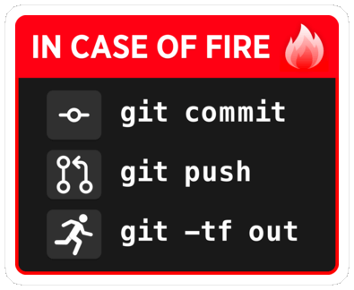

Remotes
Remotes are copies of a project and its history.
They can be located anywhere, including on external drive or on the same machine as the project, although they are often on a different machine to serve as backup, or on a network (e.g. internet) to serve as a syncing hub for collaborations.
Popular online Git repository managers & hosting services:
Let’s see how to create and manage remotes.
Creating a remote on GitHub
Create a free GitHub account
If you don’t already have one, sign up for a free GitHub account.
To avoid having to type your password all the time, you should set up SSH for your account.
Create an empty repository on GitHub
- Go to the GitHub website, login, and go to your home page.
- Look for the
Repositoriestab & click the greenNewbutton. - Enter the name you want for your repo, without spaces.
- Make the repository public or private.
Link empty repository to your repo
Click on the Code green drop-down button, select SSH if you have set SSH for your GitHub account or HTTPS and copy the address.
In the command line, cd inside your project, and add the remote:
git remote add <remote-name> <remote-address>remote-name is a convenience name to identify that remote. You can choose any name, but since Git automatically call the remote origin when you clone a repo, it is common practice to use origin as the name for the first remote.
Example (using an SSH address):
git remote add origin git@github.com:<user>/<repo>.gitExample (using an HTTPS address):
git remote add origin https://github.com/<user>/<repo>.gitGetting information on remotes
List remotes:
git remoteList remotes with their addresses:
git remote -vGet more information on a remote:
git remote show <remote-name>Example:
git remote show originManaging remotes
Rename a remote:
git remote rename <old-remote-name> <new-remote-name>Delete a remote:
git remote remove <remote-name>Change the address of a remote:
git remote set-url <remote-name> <new-url> [<old-url>]Getting data from a remote
If you collaborate on a project, you have to get the data added by your teammates to keep your local project up to date.
To download new data from a remote, you have 2 options:
git fetchgit pull
Fetching changes
Fetching downloads the data from a remote that you don’t already have in your local version of the project:
git fetch <remote-name>The branches on the remote are now accessible locally as <remote-name>/<branch>. You can inspect them or you can merge them into your local branches.
Example:
git fetch originPulling changes
Pulling fetches the changes & merges them onto your local branches:
git pull <remote-name> <branch>Example:
git pull origin mainIf your branch is already tracking a remote branch, you can omit the arguments:
git pullPushing to a remote
Uploading data to the remote is called pushing:
git push <remote-name> <branch-name>Example:
git push origin mainYou can set an upstream branch to track a local branch with the -u flag:
git push -u <remote-name> <branch-name>Example:
git push -u origin mainFrom now on, all you have to run when you are on main is:
git push

by jscript